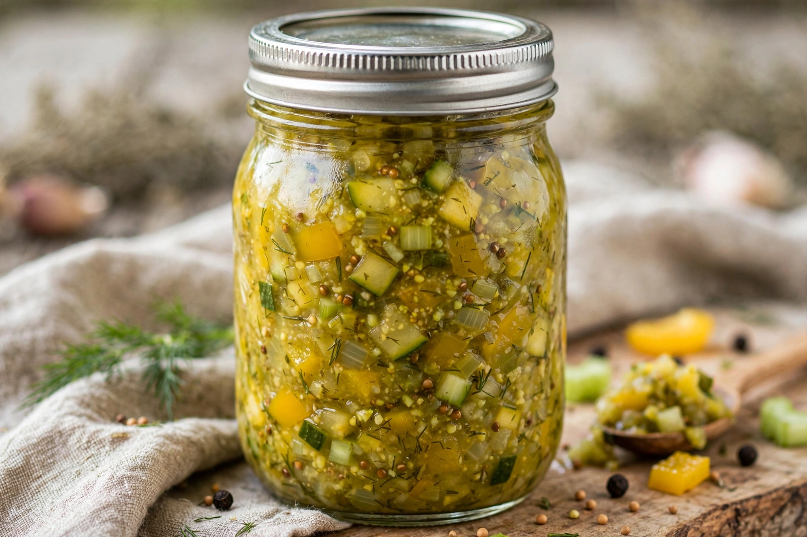

| Chow-chow | |
|---|---|
 A jar of chow-chow | |
| Type | Pickled relish |
| Region | Southern United States, Pennsylvania, New Mexico; Maritime Canada |
| Main ingredients | Green tomatoes, cabbage, onions, peppers, vinegar, mustard seed |
Chow-chow (also spelled chowchow) is a pickled relish made from a combination of vegetables, most often green tomatoes, cabbage, onions, and bell peppers, preserved in a spiced vinegar brine, frequently with mustard seed, turmeric, and celery seed. It is traditionally made in late summer to use up end-of-season garden produce that would not ripen before frost, and is canned for winter keeping.
In the Southern United States, chow-chow is typically served as a condiment for pinto beans, black-eyed peas, collard greens, and hot dogs, and recipes lean sweet-and-sour. Pennsylvania Dutch versions may include corn, cauliflower, carrots, and beans in a sweeter brine. In New Mexico, chow-chow often incorporates green chile. In Canada's Maritime provinces, a simpler variant made principally from green tomatoes and onions—sometimes called "chow"—accompanies fish cakes and baked beans.
The name is thought to derive from the Chinese Pidgin English word "chow-chow," meaning mixed or miscellaneous, applied to mixed pickles and preserves traded from China in the nineteenth century; some historians instead trace it to the French chou (cabbage), a principal ingredient. The term was also used in British commerce for assorted Chinese preserves and marmalades, which may have reinforced the Southern American usage.
Vegetables are chopped, salted, and left to draw out moisture, then simmered briefly in vinegar with sugar and spices and packed into sterilized jars. Mustard gives the relish its characteristic yellow colour and bite; some recipes produce a distinctly mustardy "mustard pickle" style. The finished relish keeps for months and mellows in flavour over time.
Piccalilli · Relish · Vinaigrette · Pickling